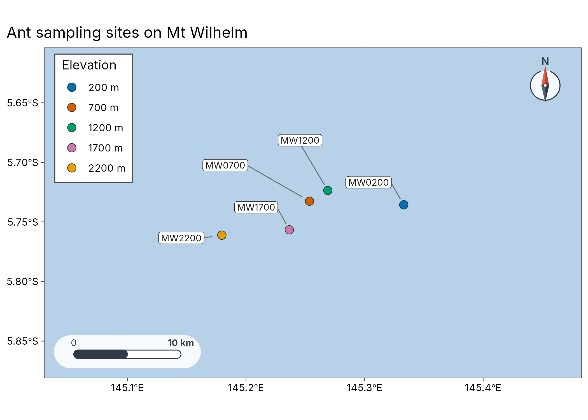
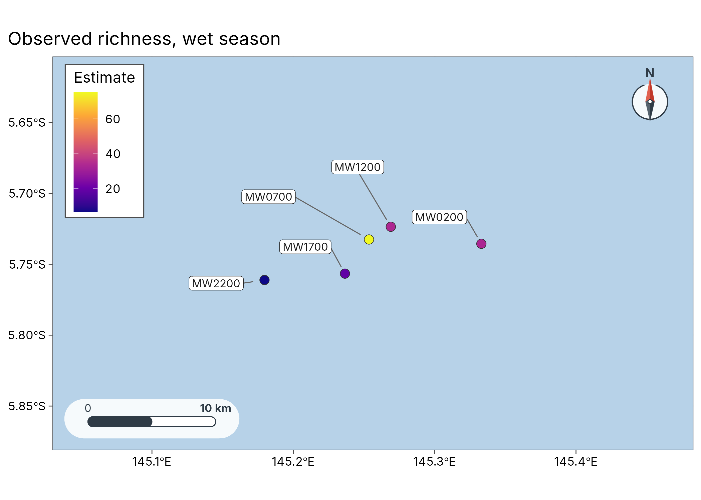
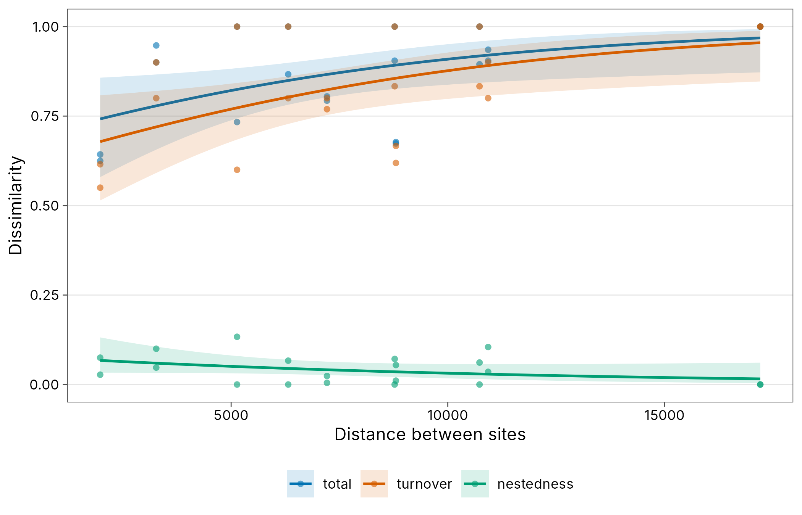

Case study: ants along Mt Wilhelm, from sites to maps
case-png-wilhelm.Rmdpng_ants (in tidydiversity) records ground-foraging ants
at nutrient baits at elevations from 200 to 2200 m on Mt Wilhelm, Papua
New Guinea, in the dry and the wet season (Moses et al. 2023, doi:10.5281/zenodo.8191946).
tidydiversity estimates diversity; tidymapr maps it.
Study sites
geo_example_sites() returns the published bait GPS of
the survey (png_ants_sites; Mottl, Moses and Klimes 2023,
doi:10.5281/zenodo.8191946),
averaged to one point per elevation band.
sites <- geo_example_sites("wilhelm") |>
filter(elevation <= 2200)
plot_sites(sites, lon, lat, colour = elevation_band, label = site, basemap = "coast") +
labs(title = "Ant sampling sites on Mt Wilhelm")
#> Warning: No Natural Earth land data available; install rnaturalearth.
#> ℹ Returning an empty land layer. Pass `coastline` or use a tile basemap.
Diversity on a map
est <- div_estimate(png_ants, q = 0, nboot = 0, .by = season) |>
left_join(sites[c("site", "lon", "lat")], by = "site")
plot_geo(filter(est, season == "wet"), estimate, lon, lat, label = site, basemap = "coast") +
labs(title = "Observed richness, wet season", colour = "Species")
#> Warning: No Natural Earth land data available; install rnaturalearth.
#> ℹ Returning an empty land layer. Pass `coastline` or use a tile basemap.
#> Ignoring unknown labels:
#> • colour : "Species"
Distance decay
geo_decay() computes pairwise dissimilarity with
tidydiversity::beta_pair() and joins geographic or
elevational distance.
com <- left_join(png_ants, sites[c("site", "lon", "lat")], by = "site")
decay <- geo_decay(com, lon, lat, .by = season, method = "haversine")
autoplot(decay)
beta_decay_model(decay)
#> # A tibble: 2 × 10
#> season model component n_pairs a b half_distance pseudo_r2 aic
#> <chr> <chr> <chr> <int> <dbl> <dbl> <dbl> <dbl> <dbl>
#> 1 dry exponent… total 10 0.267 1.02e-4 6815. 0.150 -9.29
#> 2 wet exponent… total 10 0.383 1.41e-4 4910. 0.334 -9.79
#> # ℹ 1 more variable: p.value <dbl>Save the figure
geo_save() writes maps at journal sizes:
p <- plot_sites(sites, lon, lat, colour = elevation_band, label = site)
geo_save(p, "fig1-sites.pdf", width = 170, height = 120, units = "mm")